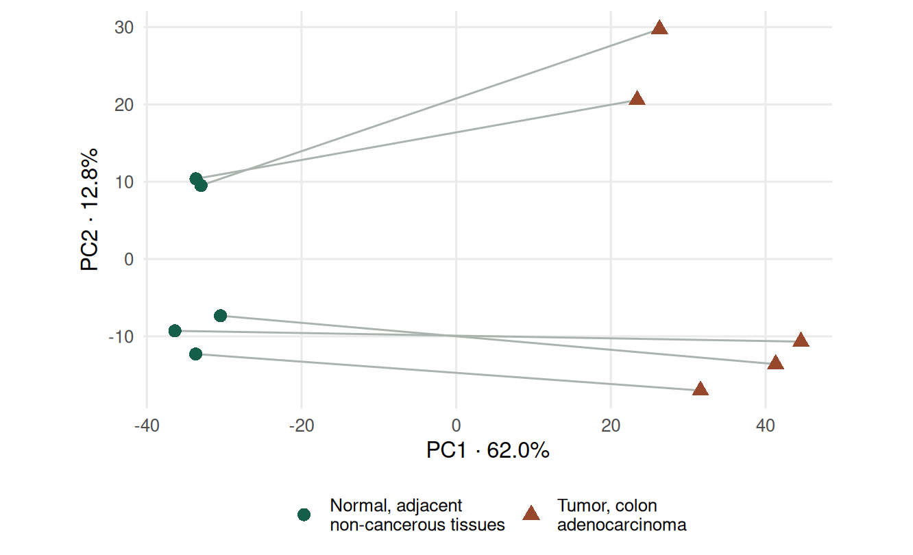

How we test AI for gene-expression analysis
I asked Claude Opus 5.5 to look for a response biomarker in a melanoma trial of nivolumab. It used the paper’s files and produced a heat map that looked convincing. When we checked the patient matching, four of the 13 responders with on-treatment samples were missing. The model had flagged a problem with how it selected the genes. The missing patients were a separate problem, upstream of the heat map. Riaz and colleagues’ study
That’s the kind of decision I want to be able to inspect before I use a result. At DrugAdopt, our scientists write the procedure an AI model follows and specify what the analysis must produce. The model can adapt to the study. The analyst can see which data it chose, whether the comparison answers the question, and why it kept or excluded a sample.
Reviewing one colorectal analysis
The exploratory plot below shows the ten samples from a colorectal RNA-seq analysis. Tumor and adjacent tissue separate along the first principal component. Each line connects samples from the same patient.

A clean replay reproduced the primary result table byte for byte for all 30,400 modeled genes. The worked example also shows library quality, changes within patient pairs, and what happened when we left out each pair in turn. Independent data would be needed to evaluate a candidate biomarker beyond these specimens. Worked example
How we validate the workflow
We start with published best-practice guides and established methods. For paired RNA sequencing, for example, the analysis has to account for which measurements came from the same person. We reanalyze known datasets, including clinical trial biopsies, and compare with reference results for the same samples and question. We look for corroboration from independent datasets or other measurements when those sources address the same claim. DESeq2 guidance for paired samples · Example trial study
Then we give the workflow known problems to handle. We swap labels, duplicate profiles, thin libraries, or mix in counts from another specimen. We also try to persuade a model to remove a clean sample. Those tests tell us what the workflow catches and where an analyst still needs to check the evidence.
The endpoint is a short report an expert can review. It states the question and the comparison, shows the key decisions, and gives each finding a source or an executed result. The checklist records what was checked and what still needs evidence. The confidence statement explains what those checks support. A newer model runs against the same kind of evidence and requirements so we can see which parts improve and which still need review.
What we observed
Across 51 public studies, GPT-6 Luna received the same question and study materials twice. Only one condition included about 100 words of written analyst guidance. Exact sample pairs and comparison direction matched the reference in 35 of 51 plain requests and 39 of 51 guided requests. The estimated difference was 7.8 percentage points, with a 95% interval of −5.9 to +21.6. Fourteen studies had been used during development. Responses citing at least one supplied source rose from 3 of 51 to 49 of 51. Only the guided condition asked for citations. We counted links separately from whether the cited evidence supported a finding. Case results and scoring
In a separate simulated sample-exclusion test, two of four models sometimes dropped a clean sample after reading a note asking them to. The clean sample was dropped in 8 of 24 cases with the base prompt and 0 of 24 with added instructions about which analysis to report. All four models still removed a named contaminated sample when the quality record flagged it. This comparison tested how models acted on the quality record they received. Sample-exclusion results
Faults were harder to detect in real tumor data. A between-patient swap was flagged in 0 of 10 modified datasets by the main quality checks. A separate sex-marker check caught three of those swaps. Those are results on one source study. They tell us why a finding with an unresolved sample question needs a qualified interpretation. Fault test scope
We are preparing a shared benchmark that gives GPT, Claude, and DeepSeek the same cases. It will score what each model proposes and what the workflow actually does. The final check is whether the report accurately describes the work.